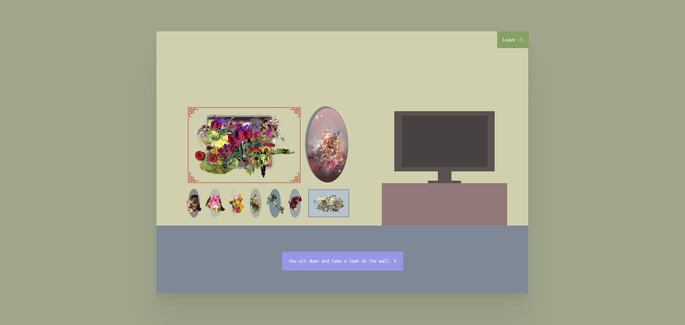
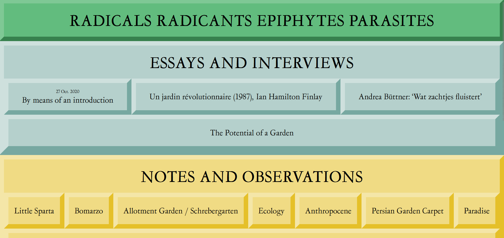

“tokonoma”
나는 이 웹사이트 ‘tokonoma’에 놀랐다. 제작자의 ‘꽃’과 ‘돌’ 수집을 선보이는 귀여운 가리키고 클릭 웹사이트이다. 꽃과 돌처럼 보이기 때문에 단어에 따옴표를 붙였다. 그런데 이미지를 왜곡했다. 그것은 매우 흥미롭고 나에게 으스스한 느낌을 주었다. 으스스했지만 수집을 보는 것은 재미있었다. 이 웹사이트의 또 다른 재미있는 측면은 Katherine(집 주인)의 꽃 중 하나를 다운로드할 수 있다는 것이다. 나는 이 웹사이트의 단순함을 좋아다. 집 디자인의 단순성은 왜곡된 꽃과 돌과 충돌한다. 웹사이트가 코딩된 방식도 단순해 보인다. 아쉽게도 휴대폰에서는 웹사이트를 볼 수 없다.
“RADICALS RADICANTS EPIPHYTES PARASITES”
이 웹사이트 제작자가 웹사이트를 꾸미기 위해 무엇을 사용했는지 첫눈에 알 수 있다. 너무 간단하고 깨끗하다. 일부 링크가 작동하지 않다. 하지만 전반적으로 다른 웹사이트에 비해 탐색이 쉬웠다. 내용이 유익하고 PC와 휴대폰 모두에서 쉽게 읽을 수 있다. 이 웹사이트의 코딩도 간단해 보인다. CSS 코딩도 마찬가지이다. 제목과 링크의 디자인이 동일하더라도 어느 것이 어느 것인지 쉽게 알 수 있다. 나는 링크가 무엇인지, 제목이 무엇인지 나타내는 방식을 좋아한다. 링크 위로 마우스를 가져가면 모양을 변경한다. 색상 팔레트도 눈을 즐겁게한다.
“untold stories”

이 웹사이트는 재미있다! 디자인도 독특할 뿐만 아니라 깔끔하다. 글도 이렇게 뭉쳐져 있어도 읽기 쉽다. 전체 내용을 더 잘 읽고 싶으시면 클릭하시면 된다. 글꼴과 줄 간격이 휴대폰과 PC 모두에서 눈에 좋다. 모든 이야기를 탐색하는 것도 쉽다. 다른 2개와 달리 제작자가 이것을 어떻게 코딩했는지 알 수 없으며 생각해 보는 것이 흥미롭다. 각 개별 이야기의 색상 선택이 매우 좋다.또한 그것이 휴대폰에서도 어떻게 잘 작동하는지에 놀랐다.